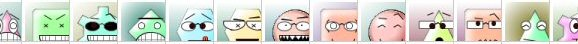
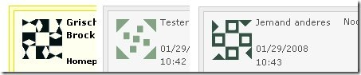

Dokumentace k pluginu 'Gravatar'
Dokumentaci k tomuto pluginu pøelo�il do èeštiny Vladimír Ajgl (vlada [zavinac] ajgl [tecka] cz) dne 26.6.2011. Od té doby mohl bıt plugin pozmìnìn nebo mohly bıt rozšíøené jeho funkce. Zkontrolujte pro jistotu i aktuální nìmeckou dokumentaci, anglickou dokumentaci a ChangeLog.
Dokumentace k pluginu: Avatar Plugin (Gravatar)
Pøehled
Pomocí pluginu Avatar lze pøiøadit komentujícím v blogu pøiøadit "oblièej". Ka�dému samostatnému komentátorovi lze pøiøadit takzvanı Avatar, kterı ho reprezentuje. K tomu lze pou�ít nìkolik rùznıch mechanizmù, jak umo�nit komentujícím pou�ití avatara, které budou v následujícím textu probrány.
V�dy je pou�it první mechanizmus, kterı nalezne avatara. Další zpùsoby pak nejsou ani zkoušeny. To znamená, �e je tøeba seøadit metody v tom poøadí, aby byly co nejdøíve pou�ity nejèastìji pou�ívané mechanizmy. Zpùsoby, které poskytnou avatara v ka�dém pøípadì, by mìly bıt umístìny a� na konci, proto�e po nich zaøazené metody nebudou pøirozenì nikdy uplatnìny.
Dùle�ité: Tento plugin musí bıt umístìn v seznamu pluginù pøed všemi pluginy, které mìní odkazy, jako napøíklad "Markup: Sledování odchodù" (Exit Tracking Plugin). Jinak nemusejí fungovat napøíklad avatary, které jsou generovány na základì odkazù na stránky komentátorù.
Následuje popis aktuálnì dostupnıch mechanizmù, jak pøiøadit avatara komentátorùm:
nahoru
Gravatar
Gravatar je jedna z nejznámìjších slu�eb pro u�ivatele avatarù. U�ivatele se mohou u této slu�by registrovat pomocí emailu, na kterı je vázán obrázek avatara.
Gravatary jsou tedy spøa�ené s emailem komentátora. Pouze pokud komentátor zadá svùj mail, je mo�né dotázat se Gravataru, jestli je pro danı mail registrován obrázek avatara.
nahoru
Pavatar
Pavatary jsou avatary (obrázky), které pro tento úèel nahrál u�ivatel na svoji domovskou stránku.
Oproti velmi podobnım Favatarùm sem mù�e u�ivatel nahrát obrázek avatara v libovolném rozlišení.
V tomto pøípadì se zjiš�uje avatar na základì domovské stránky, kterou zadal komentátor, konkrétnì jestli tato domovská stránka obsahuje Pavatara. Tento zpùsob zjiš�ování avatara je pou�it pøirozenì pouze v pøípadì, �e komentátor zadal domovksou webovou stránku.
nahoru
Favatar
Toto je koncept, pomocí kterého má spousta vlastníkù webovıch stránek Avatara, ani� pro to musejí cokoliv udìlat:
Blog pou�ije jednoduše favicon (ikonku webu) ze stránky, kterou komentátor zadal jako svoji domovskou.
Favicon je obvykle jenom obyèejná ikona, která bıvá docela malá a èasto nevypadá jako avatar.
nahoru
Twitter
V pøípadì, �e komentátor zadá adresu domovské stránky jako URL profilu na Twitteru, pak bude tento profil prohledán, jestli obsahuje profilovou fotku, která bude následnì pou�ita jako avatar.
Poznámka: Pokud je zároveò pou�ito hledání metodou "Favatar", pak musí stát tato metoda Twitter pøed Favatarem, proto�e jinak bude místo obrázku z profilu pou�ita favicona Twitteru. Co� mù�e bıt na druhou stranu pou�ito úmyslnì, napøíklad k jasnému a jednoznaènému oznaèení "tweetbackù" z Twitteru.
nahoru
Identica
Toto je zvláštní avatar pro pingbacky Identica. V tomto pøípadì je hledán profilovı obrázek u�ivatele, kterı poslal pingback.
Poznámka: Pokud je zároveò pou�ito hledání metodou "Favatar", pak musí stát tato metoda Identica pøed Favatarem, proto�e jinak bude místo obrázku z profilu pou�ita favicona Identicy. Co� mù�e bıt na druhou stranu pou�ito úmyslnì, napøíklad k jasnému a jednoznaènému oznaèení "tweetbackù" z Identicy.
nahoru
MyBlogLog
Toto je opìt centrální slu�ba (podobnì jako Gravatar). MyBlogLog je slu�ba poskytující blogy, ale zároveò z ní lze získat avatary.
Pøítomnost MyBlogLog avatarù je zjištìna z domovské adresy komentátorù.
nahoru
Wavatar
Wavatar je dynamicky vyroben z domovské stránky a emailové adresy komentátorù. Poskytuje pro ka�dého u�ivatele jinı, ale v�dy stejnı obrázek. Tímto zpùsobem je v�dycky vlo�en avatar, tedy všechny metody zaøazené po této budou ignorovány. Wavatary vypadají asi následovnì:

nahoru
MonsterID
MonsterID avatary jsou generovány stejnım mechanizmem jako Wavatary nebo Idnetikony. V tomto pøípadì jsou vygenerovány takovéto roztomilé "pøíšerky" (monstra).
Podobnì jako u Wavataru a Identikon je tímto zpùsobem v�dycky vlo�en avatar, tedy všechny metody zaøazené po této budou ignorovány.
nahoru
Identicon/YCon
Avatary Identicon (identikony) jsou generovány stejnım mechanizmem jako Wavatary nebo MonsterID. V tomto pøípadì jsou vygenerovány abstraktní obrazce.
Podobnì jako u Wavataru a MonsterID je tímto zpùsobem v�dycky vlo�en avatar, tedy všechny metody zaøazené po této budou ignorovány.

nahoru
Standardavatar
Metoda "Standardavatar" poskytuje v�dycky stejnı obrázek pro všechny u�ivatele. Obrázek, kterı bude pou�it, lze zadat v sekci "Nastavení".
nahoru
Nastavení
Poøadí vlo�ení Avatarù
Zde je zadáno poøadí zkoušení jednotlivıch metod pro zjištšìní avatarù ke komentátorùm.
V souèasnosti existuje 6 metod, ze kterıch je mo�né poøadí sestavit. Je tøeba dát pozor na to, �e metody, které generují avatara poka�dé, jsou poslední, které jsou vyzkoušeny, všechny následující metody jsou ignorovány.
nahoru
Standard-Avatar
URL adresa ke standardnímu avataru. Tady musíte zadat relativní nebo absolutní URL adresu k obrázku standardního avataru.
nahoru
Zobrazovat v postranním panelu
Mají se obrázky avatarù zobrazovat i v postranním panelu (poslední komentáøe)?
nahoru
Zobrazovat podporované typy avatarù
Pokud je zaškrtnuto, pak se pod políèkem k vlo�ení komentáøe objeví øádek s vıètem podporovanıch avatarù.
nahoru
Jméno autora v atributu ALT
Normálnì je umístìho jméno autora v atributu TITLE u obrázku, atribut ALT je pak vyplnìn hvìzdièkou "*", aby se v rozvr�ení stránky nic nerozházelo, pokud nejsou nata�eny obrázky. Nicménì z hlediska pøístupnosti stránky i pro slepé ètenáøe je dùle�ité, aby v atributu ALT nìco bylo, proto�e je to právì tento atribut, kterı jim je pøedèítán a podle kterého poznají, co je na obrázku. Pokud tedy chcete podporovat i tyto posti�ené ètenáøe, mìli byste tuto volbu povolit.
nahoru
Generovat Smarty Tag
Pokud je zaškrtnuta tato volby, není obrázek avatara vlo�en pøímo do komentáøe, ale místo toho je generován Smarty Tag {$comment.avatar}, kterı pøi generování stránky obsahuje HTML kód pro zobrazení obrázku. Tuto volbu byste mìli zapnout pouze pokud víte, �e šablona vzhledu, kterou po�íváte, podporuje tento tag. Jestli tomu tak opravdu je, mù�ete jednoduše vyzkoušet.
nahoru
Zarovnání
Pomocí této volby mù�ete zadat zarovnání avatara vzhledem ke komentáøi, tedy pokud nepou�ítáve volbu Smarty Tag. V pøípadì, �e Smarty Tag pou�íváte, pak musíte k zarovnání obrázku pou�ít odpovídající CSS tøídu ve stylopisu.
nahoru
Velikost obrázku
Maximální zobrazená velikost avataru v pixelech.
nahoru
Doba cachování
Kdy� mají bıt avatary doèasnì ukládány (doporuèeno!), musí bıt zde uveden poèet hodin, bìhem kterıch se mají obrázky natahovat z blogového serveru, namísto serveru vzdáleneé avatarové slu�by. Sice to zpùsobí lehké zvıšení provozu na vašem blogovém serveru, na druhou stranu se stanou obrázky víceménì nezávislé na pøístupnosti serveru externích slu�eb. "0" znamená vypnutí cachování.
nahoru
Indikace Gravataru
Dìtská pojistka :)
nahoru
Gravatar Fallback (zpracování chyby)
Metoda Gravatar umo�òuje chybovou metodu pro pøípad, kdy pro u�ivatele není nalezen �ádnı avatar. Tou mù�e bıt jedna z Monster ID, Identicon nebo Wavatar. Pokud nastavíte tuto chybovou metodu pro Gravatara, nebudou zkoušeny �ádné další metody pro zjištìní avatara, pokud u�ivatel zadal emailovou adresu.
nahoru
V�dy vy�adovat Gravatar Fallback
Vy�adovat zpracování chyby Gravatar (Gravatar Fallback) také pokud u�ivatel nezadal �ádnı email (ale pokud zadal URL adresu domovské stránky nebo jméno).
nahoru
Historie verzí (ChangeLog)
- verze 1.54
- Do jazykové konstanty PLUGIN_EVENT_GRAVATAR_SUPPORTED byl pøidán parametr %s pro zobrazení podporovanıch avatarovıch slu�eb.
- verze 1.52
- Zmìnìno zobrazení podporovanıch avatarù pod polem pro komentáø, aby podporovalo hezké zalamování øádkù.
- verze 1.51
- Pou�ití funkce strtolower() pro mailové adresy.
- verze 1.49 [brockhaus]
- Pavatar v blozích s pøesmìrováním nefungoval, pokud byl odkaz na Pavatar pøístupnı pouze v informacích tagu "rel link"
- verze 1.48 [brockhaus]
- Oprava: Kompatibilita PHP byla porušena pøi opravì 1.46 :-/
- Pøidán avatar Identica. Pou�ito hlavnì pro pingbacky Indetica a mìlo by bıt pou�ito pøed Favatarem, jinak se bude zobrazovat znaèka Identica místo obrázku u�ivatele.
- Vyèištìní kódu
- verze 1.47 [brockhaus]
- Vypnutí ladicích vıpisù v template_c
- verze 1.46 [brockhaus]
- Pøidán Twitter Avatar (pokud URL odkazuje na profil na Twitteru). To je vìtšinou pou�ito pro Tweetbacky a mìlo by bıt pou�ito pøed Favatarem, jinak se bude zobrazovat logo Twitteru.
- Vyèištìní kódu
- verze 1.45 [brockhaus]
- verze 1.44 [brockhaus]
- Pøidána podpora Wavatarù
- Podpora pro ošetøení chyb (fallback) Gravataru pomocí indetyicon, MonsterID a Wavataru.
- Optimalizace zpìtnıch volání (trackback) avatarù: Querypars budou odstøi�eny z URL. Nyní v ukázkovém Serendipity blogu dostanete v�dycky stejného cachovaného Avatara, ne samostatného pro jiné stránky.
- verze 1.43 [brockhaus]
- Volba nastavení pro pøidání jména autora do attributu ALT u obrázku avatara. Normálnì je to vyplnìno hvìzdièkou "*", ale slepci jsou pøi prohlí�ení stránek závislí na tagu ALT, kterı jim èteèky pøedèítají, aby se dozvìdìli, co je obsahem obrázku.
- verze 1.42 [brockhaus]
- Kódování podtr�ítka "_" v URL adresách u�ivatelù, aby se odlišily od oddìlovaèù. Funkce "urlencode" je nekóduje. Díky u�ivateli [Tino Schwarze] za objevení a opravu.
- verze 1.41 [garvinhicking]
- Opravena hlavièka "Last-Modified" u obrázkù avatarù.
- verze 1.40
- verze 1.39 [brockhaus]
- Avatary Monster ID je nyní také cachován, proto�e jejich vytváøení trvá dlouho.
- verze 1.38 [brockhaus]
- Podpora Monster ID avatarù (podrobnosti naleznete na http://www.splitbrain.org/go/monsterid)
- Selhání pøi èerstvé instalaci a èasu cache nastaveném na 0.
- Podpora nastavení absolutní cesty k standardnímu avataru.
- Po ulo�ení nastavení je nyní cache v�dy vyèištìna, aby byly zmìny viditelné ihned, dokonce i kdy� je cachování zapnuto.
- Pokud plugin nemù�e zapisovat do cache, pak to v ladicím módu zapíše do logu a zobrazí vıchozí obrázek, pokud není nalezen cachovanı soubor.
- verze 1.37 [brockhaus]
- Øádka pod oknem komentáøe informující o podporovanıch typech avatarù lze skrıt pomocí nastavení.
- verze 1.36 [brockhaus]
- Pøidána nová volba: Mù�ete nastavit, �e plugin nebude vytváøet avatary pøímo, ale místo toho pouze tag pro smarty. Pokud je tato volba zapnutá, mù�ete si definovat v šablonì pro komentáøe, kde se mají avatary zobrazovat, a to pomocí tagu $comment.comment_avatar.
- CSS tøída avataru se bude mìnit podle toho, kde je zobrazen. Pro normální komentáøe bude mít tøídu "comment_avatar", pro plugin "nejnovìjší pøíspìvky" to bude tøída "serendipity_plugin_comments_avatar", aby byla mo�nost jednoduše je oznaèit, ostylovat.
- Nastavení zarovnání avatarù: Nastavení zarovnání bude pou�ito, pokud je avatar vykreslen pøímo (ne pomocí smarty).
- Nová volba pro vypínání/zapínání obrázkù avatarù v postranním sloupci (nejnovìjší komentáøe).
- Podporovaní metody avatarù se zobrazovaly i pod kontaktním formuláøem, co� ale nemìlo logickı smysl. V tomto fromuláøi byly tedy avatary vypnuty.
- Další zmìny v jazykovıch souborech.
- verze 1.35 [brockhaus]
- Opraveny chyby v anglickém jazykovém souboru. (Díky Donovi!)
- verze 1.34 [brockhaus]
- Hodnocení Gravatarù nepracuje spolehlivì. Mùj Gravatar hodnocenı jako G je zobrazen pouze pøi pou�ití hodnocení gravatarù X. :-/
Pøidána volba pro vypnutí parametru hodnocení Gravatarù, co� by mìlo mít stejnı efekt jako nastavení hodnocení X.
- verze 1.33 [brockhaus]
- Pavatar: X-Pavatar Header je nyní znovu podporován a je první pou�itou metodou automatické detekce Pavatara.
- verze 1.32 [brockhaus]
- Vıchozí avatar MyBlogLog nebyl správnì detekování. :-/
- Pokud není zadán email ani url adresa, ale je definován vıchozí avatar, je nyní zobrazen právì vıchozí avatar.
- verze 1.31 [brockhaus]
- Zmìna èasu volání (call-time) chyby (pass-by-reference) (fetchAvatar).
- verze 1.30 [brockhaus]
- Standradní Avatar se nezobrazoval, pokud byl blog nainstalován v podadresáøi webu a ne pøímo v koøenové slo�ce.
- Odkaz na Gravatara byl trochu špatnì (pøesto fungoval).
- verze 1.29 [brockhaus]
- Oprava chyby 1.27 pøidávala k URL "http://", i kdy� nebyla zadána vùbec �ádná URL adresa.
- verze 1.28 [brockhaus]
- V Serendipity 1.1 nebylo mo�né natavit vıchozího avatara. Nastavení nebylo kompatibilní s verzí Serendipity 1.1.
- verze 1.27 [brockhaus]
- Pokud pisatel zadal svoji adresu jako "www.domena.cz" místo "http://www.domena.cz", Avatar nebyl naèten správnì.
- verze 1.26 [brockhaus]
- MyBlogLog trochu pozmìnil zpùsob volání avatara, co� mìlo za následek, �e ošetøení chybovıch vıstupù (fallback) pro MyBlogLog pøestal fungovat.
- verze 1.25 [garvinhicking]
- Zarovnání (algin) nahraceno definicí pomocí CSS stylù, tak�e XHTML u� neobsahuje �ádné definice zarovnání.
- verze 1.24 [brockhaus]
- Kontrola odpovìdi MyBlogLog, jestli obsahuje opravdu obrázek.
- Vyèištìní pamìti cache pøi nastavení hodnoty cachování na 0.
- Vypnutí ladicích vıpisù.
- verze 1.23 [brockhaus]
- Pøi vkládání èerstvıch P/favatarù, plugin pøijme pouze odpovìdi oznaèené vzdálenım serverem jako obrázky. To zamezí pøijetí potenciálních html stránek jako obrázku avatara.
- verze 1.22 [brockhaus]
- Vkládání i pøesmìrovanıch P/Favatarù.
- verze 1.21 [brockhaus]
- Vkládání avatarù se rozbilo pøi vypnutí cache.
- Prohlí�eè nebyl schopen cachovat vıchozí avatary kvùli špatnì nastavenému èasu cache.
- Kontrola, jestli cachovanı soubor vypadá jako obrázek, pøedtím, ne� je odeslán na klienta.
- verze 1.20 [brockhaus]
- Titulek obrázku avatara nyní zobrazuje jméno autora místo "Avatar" (V.)
- verze 1.19 [brockhaus]
- Vyu�ití cache prohlí�eèe má za následek dobré vylepšení vıkonu!
- verze 1.18 [brockhaus]
- verze 1.17 [brockhaus]
- Pokud je zapnuto cachování, je nyní cachováno všechno. Známí pøispìvatelé a komentátoøi nyní nezpùsobí �ádné volání cizích serverù, pokud u� jsou jejich obrázky cachovány. Velmi pìkné posílení vıkonu. Díky Garvinovi za nápad.
- Záplata proti hackování od u�ivatele [garvinhickins]
- verze 1.16 [garvinhicking]
- verze 1.14 [brockhaus]
- Implementováno zpracování chyb pro MyBlogLog! :-) Ale je pomalé, dokonce i s optimalizací pomocí cachování. MyBlogLog by nemìl bıt první v poøadí avatarù.
- Pøidána pátá kolonka pro vıbìr metody avatarù, proto�e MyBlogLog nyní také podporuje zpracování chyb (fallback).
- verze 1.13 [brockhaus]
- Doporuèení zmìnìno: Není to plugin "statistika", kterı znefunkèní Pavatary/Favatary, ale plugin "sledování odchodù" (exit tracking plugin)
- verze 1.12 [brockhaus]
- MyBlogLog avatary jsou nyní také cachovány.
- Stránky s pøesmìrováním na vıchozí stránku, pokud nebyla nalazena vıchozí polo�ka, jsou nyní podporovány. Døívìjší plugin avatar pøedpokládal, �e vıchozí stránka ja P/Favatar.
- Vıchozí nastavení poøadí avatarù je nyní: Gravatar -> Pavatar
-> Favatar -> vıchozí Avatar
- Pøidáno doporuèení, �e plugin by mìl bıt zaøazen pøed pluginy, které mìní odkazy.
- Naèítání nastavené cesty pluginu. Døíve to byl v�dy adresáø 'plugin'.
- Vyøazeno nastavení okraje gravatara, proto�e u� nefunguje (napoøád?).
- verze 1.11 [brockhaus], testovací verze nebyla releasována do CVS/Spartacus
- Fallback (zpracování chyby) pro Gravatar funguje! Ale zobrazuje vıchozího avatara nezávisle na nastavení. Tak�e toto nastavení bylo smazáno.
- verze 1.10 [brockhaus]
- Informace o Pavatar / Avatar nebyly nikdy naètené z cache
- ...ale po naètení z cache zpùsobily nekoneènou smyèku pro obrázky naètené z lokálního blogu (pokud byl povolen postranní blugin s komentáøi - comment sidebar)
- Nastavení vıšky obrázku bylo pojmenováno "height" ... :-/
- Cachování Gravataru nefungovalo spolehlivì, pokud byl nastaven vıchozí avatar.
- verze 1.9 [brockhaus]
- Pøi hledání Pavatara byl nata�en Favatar jako Pavatar, pokud nebyl nalezen Pavatar, ale favicon. Díky u�ivateli [El Burro]
- verze 1.8 [brockhaus]
- Plugin nebych schopen naèíst Favatary/Pavatary, pokud bylo pøesmìrování nasmìrováno na URL stránky nastavené jako domovská stránka komentujícího. Tøeba Garvin má takovı blog...
- verze 1.7 [brockhaus]
- Pøidána podpora Pavatarù (www.pavatar.com)
- Pøidána podpora MyBlogLog avatarù (www.mybloglog.com)
- Poøadí pro vıbìr avatarù a jaké typy avatarù jsou podporovány, vše je nyní nastavitelné.
- Standardní avatar mù�e bıt jeden z nich (mìl by bıt poslední).
- Volba pro nenastavení Gravatara jako vıchozího avatara, i kdy� je definovanı. (Chceme ménì datovıch profilù...)
- Vlo�ení vıchozího avatara pomocí mediatéky v nastavení pluginu.
- Velikost obrázku je nyní zajištìna pomocí HTML kódu.
- Pod polem pro komentáø jsou zobrazovány pouze aktuálnì nastavené metody avatara jako podporované.
- verze 1.6 [garvinhickins]
- verze 1.5 [garvinhickins]
- verze 1.4 [garvinhickins]
- verze 1.3 [garvinhickins]
- Opraveny chyby neplatnosti domény
nahoru